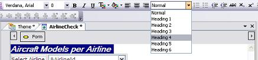
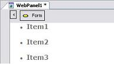
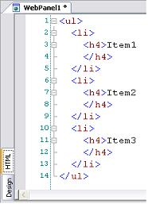
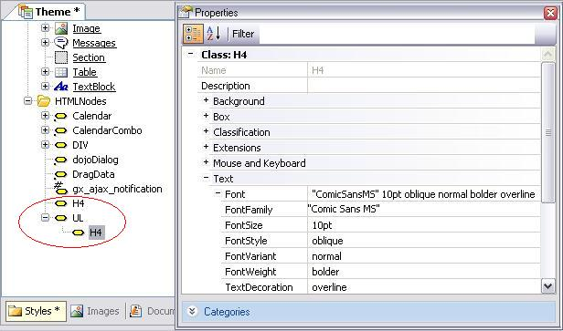

To create a new HTML Tag Node, you must right-click on the "HTML Nodes" folder or on another already defined HTML Node, and select "Add Tag." A dialog will be displayed with a combo box where you will be able to choose from a group of HTML tags. There follows a very simple example, where a list of items with bullets has been defined in the form of a GeneXus web panel. This list has been generated as follows, using the "Format" button of the GeneXus "HTML Formating" toolbar: 
As shown in the following result:  As it is to be expected, the generated HTML code will be the following:  Therefore, we can define an H4 child of a UL tag in the theme, and specifically set up the properties of the H4 tag, if the objective is that the items that are headings of the 4 type within the list be visualized with specific characteristics. If the objective is differentiating those heading fonts, from the 4 headings that do not belong to any list, an independent H4 tag with its properties will be defined, as shown in the following figure: 
|